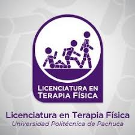

Licenciatura en Terapia Física

Titular: Mtra. Rosa María Chío Austria
Correo institucional: terapia_fisica@upp.edu.mx
Teléfono de Atención: 01 771 5477510 ext. 2252 o 2216
Horario de Atención: 09:00 a 17:00 hrs.
Introducción
Es la Disciplina en la cual se forman profesionistas con alto sentido humanístico y ético, que responden a las necesidades de prevención y atención de personas con capacidades diferentes.
Principales áreas de conocimiento
- Anatomía
- Biología
- Física
- Química
líneas de investigación
- Estilos de Vida Saludables
- Fisioterapia Multidisciplinaria
objetivo
Formar recursos humanos especializados que contribuyan en la rehabilitación integral de las personas con alteraciones músculo esqueléticas, capacitados para evaluar e implementar técnicas de rehabilitación física en clínicas u hospitales.
Perfil de egreso:
El Licenciado en Terapia Física colabora con el equipo interdisciplinario de salud en la elaboración de los planes de tratamiento rehabilitatorio integral, tanto del individuo discapacitado como con el sujeto de riesgo, con la aplicación de técnicas generales y especificas de rehabilitación.
Competencias y habilidades
- Aplicar modalidades terapéuticas como mecanoterapia, electroterapia y termoterapia, entre otras.
- Diseñar e innovar tecnología para atender las necesidades del sector salud en materia de rehabilitación física.
- Detectar problemas de tratamiento y establecer soluciones adecuadas en coordinación con el médico especialista.
- Identificar la problemática del paciente y determinar el tratamiento adecuado estableciendo soluciones adecuadas en coordinación con equipos de interdisciplinarios de trabajo.
- Manejo de equipo diagnóstico para rehabilitación física.
oportunidades de trabajo
- Centros de rehabilitación.
- Hospitales generales.
- Sector salud.
- Instituciones de educación superior.
- Centros de investigación.